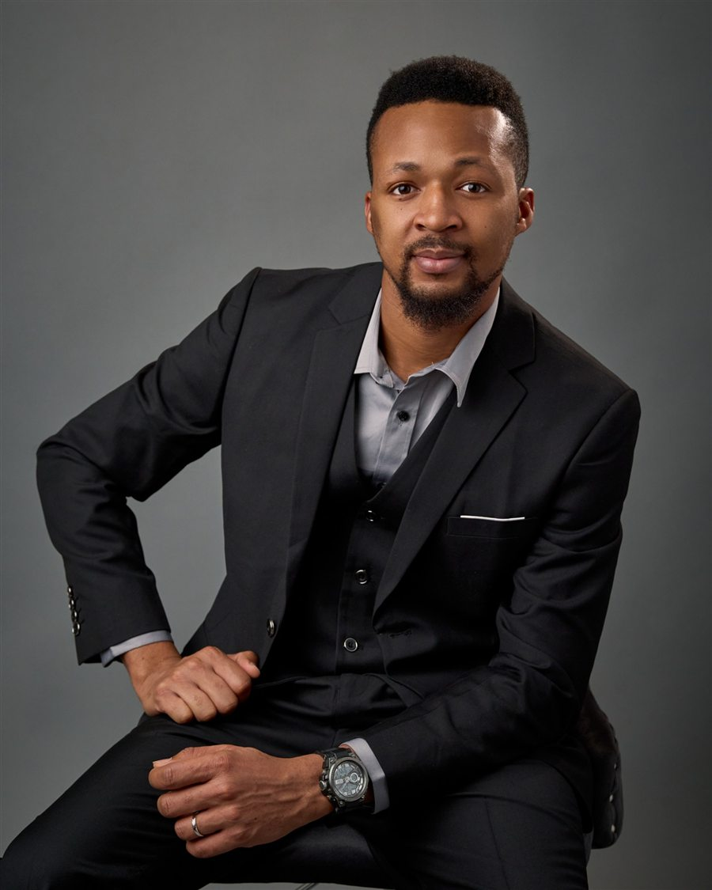

Roadmaps · Prioritization · GTM
Product Strategy
Roadmap development, feature prioritization, product positioning, and go-to-market planning, tied to what executives and customers actually need.
Product Manager · Raleigh, NC
I turn customer research and stakeholder decisions into build-ready requirements, and I make sure products are ready before they launch. I bring a Lean Six Sigma eye for quality and a communicator's ear for users.
About

I'm a product manager at Aeonian Technology, where I run strategy and roadmaps for three SaaS products and report directly to the CEO. I'm also finishing an MS in Technology Management at North Carolina A&T State University, with a 4.0 GPA.
I came to product through communication. I spent the years after my undergraduate degree leading communication and stakeholder engagement, most recently at The CANs in Abuja, a nonprofit that built digital platforms against gender-based violence, police brutality, and poverty. There I helped take the UNSUB platform from pilot to 2,000 users and learned that good products start with the people who use them.
My toolkit spans both sides of the work. On the research side: surveys, interviews, personas, and journey maps. On the delivery side: user stories, acceptance criteria, risk-based test plans, and go/no-go criteria. As a Lean Six Sigma Green Belt, I measure what matters, and I build AI-powered web apps of my own.
Get in touch →What I do
Roadmaps · Prioritization · GTM
Roadmap development, feature prioritization, product positioning, and go-to-market planning, tied to what executives and customers actually need.
Surveys · Interviews · Personas
Voice-of-customer surveys, stakeholder interviews, personas, and journey maps, synthesized into recommendations a team can act on.
User stories · Acceptance criteria
Build-ready requirements, sprint planning support, and day-to-day coordination with offshore development partners.
Go / no-go · Green Belt
Risk-based test plans, severity-based launch criteria, and end-to-end journey testing, backed by Lean Six Sigma methods.
Executives · Partners · Teams
Executive reporting, cross-functional alignment, and influencing without authority. I taught public speaking at NC State for three semesters.
LLMs · Automation
I design and build AI-powered web apps myself, which keeps my requirements grounded in how software really gets made.
Product work
What I owned, and what changed because of it.
Builds
Each one started with a real operational problem: a job search, a volunteer roster, a machine shop.
Runs the CNC, automotive, and fabrication labs for NC A&T's Applied Engineering Technology department. Students scan a machine's QR code to book time, check out tools, and report problems.
Finds well-matched roles daily, ranks them by fit, and drafts tailored, ATS-ready CVs, cover letters, and answers using only facts you've confirmed.
Gets the right people to show up for nonprofits, NGOs, and churches. Volunteers sign up, confirm, swap, and check in by text, with no account or app.
Experience
Most recent first.
Strategy and roadmaps for three SaaS products, reporting to the CEO.
Trained participants across two CNC machining bootcamps. Led metrology lectures and training for college and high school students with Dr. David Chamblee.
Led recruitment for BVCC's free product curriculum: 150+ registrations, on-campus talks, tabling events, and media.
GPA 4.0, expected December 2026. Coursework in technology management analytics, strategic quality, and Six Sigma.
Market research, personas, journey maps, and KPI dashboards that informed positioning and go-to-market planning.
GPA 4.0. Taught COM 110 Public Speaking for three semesters as a teaching assistant. Schnog Fellow and ISAC member.
Took the UNSUB platform from 17 to 2,000 users, secured $100K in funding, and ran Project RISE across 70+ organizations.
Process and communication improvement for 10+ small and mid-sized businesses.
GPA 4.31 / 5.0.
Education & credentials
Giving back
Documentary for NCCADV · 2025 – 2026
Shot, produced, directed, and edited a volunteer documentary for the North Carolina Coalition Against Domestic Violence on its affiliate agencies and the effect of funding cuts on their work. Member since 2023.
Research · Schnog Fellow
With Prof. Roy Schwartzman at NC State, built a website, map, videos, and teaching materials for students and Holocaust educators.
Advisory council
Gave feedback and recommendations to the Office of International Services on programs and policies for international students.
Volunteer
Volunteered with the Food Bank of Central & Eastern North Carolina, Raleigh BugFest, and other food banks.
Contact
I'm open to product management roles and projects. Reach out about a role, a product that needs a clear roadmap, or a launch that needs to go right.
© 2026 Richard Abiona